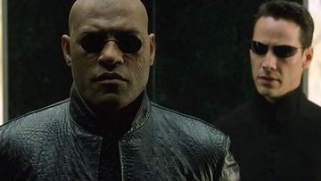
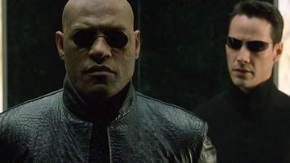

Pride and Prejudice, is the movie adaptation, in the book Pride and Prejudice that was authored by Jane Austen. The story is based on Jane Austen's novel about five sisters - Jane (Rosamund Pike), Elizabeth (Keira Knightley), Mary (Talulah Riley), Kitty (Carey Mulligan), and Lydia Bennet (Jena Malone) - in Georgian England. Their lives are turned upside down when wealthy young Mr. Bingley (Simon Woods) and his best friend, Mr. Darcy (Matthew Macfadyen), arrive in their neighborhood.
When the wealthy bachelor Mr. Bingley (Simon Woods) and his best friend Mr. Darcy (Matthew Macfadyen) arrive in town to spend the summer in a mansion nearby their property, the shy and beautiful Jane falls in love for Mr. Bingley, and Elizabeth finds Mr. Darcy a snobbish and proud man, and she swears to loathe him forever. This is the beginning of their wonderful love story.
Love is soon in the air for one of the Bennet sisters, while another may have jumped to a hasty prejudgment. For the Bennet sisters, many trials and tribulations stand between them and their happiness, including class, and gossip.

Forrest Gump is a simple man with a low I.Q. but good intentions. He is running through childhood with his best and only friend Jenny. His 'mama' teaches him the ways of life and leaves him to choose his destiny. Forrest joins the army for service in Vietnam, finding new friends called Dan and Bubba, he wins medals, creates a famous shrimp fishing fleet, inspires people to jog, starts a ping-pong craze, creates the smiley, writes bumper stickers and songs, donates to people and meets the president several times. However, this is all irrelevant to Forrest who can only think of his childhood sweetheart Jenny Curran, who has messed up her life. Although in the end all he wants to prove is that anyone can love anyone.
After half of all life is snapped away by Thanos, the Avengers are left scattered and divided. Now with a way to reverse the damage, the Avengers and their allies must assemble once more and learn to put differences aside in order to work together and set things right. Along the way, the Avengers realize that sacrifices must be made as they prepare for the ultimate final showdown with Thanos, which will result in the heroes fighting the biggest battle they have ever faced.
Thomas A. Anderson or so called Neo is a man living two lives. By day he is an average computer programmer and by night a hacker known as Neo. Neo has always questioned his reality, but the truth is far beyond his imagination. Neo finds himself targeted by the police when he is contacted by Morpheus, a legendary computer hacker branded a terrorist by the government. As a rebel against the machines, Neo must confront the agents: super-powerful computer programs devoted to stopping Neo and the entire human rebellion.

 

Dramatizes the life of Yip Man (1893-1972) in the mid to late 1930s. Foshun is a prosperous city with many martial arts schools. Yip, who practices Wing Chun, is the local master. When a rough gang comes to town, it's Yip they must challenge. Then, Japan invades China. Yip and his family live in poverty, with Yip taking any work for food. General Miura, now in charge, stages martial arts fights between Chinese and his men: winners get extra rice. When the general's attaché murders a colleague of Yip's, Yip must step forward. At the same time, the ruffians return to town, this time threatening a local cotton mill.Ip Man rises up to challenge General Miura and the Japanese Army.